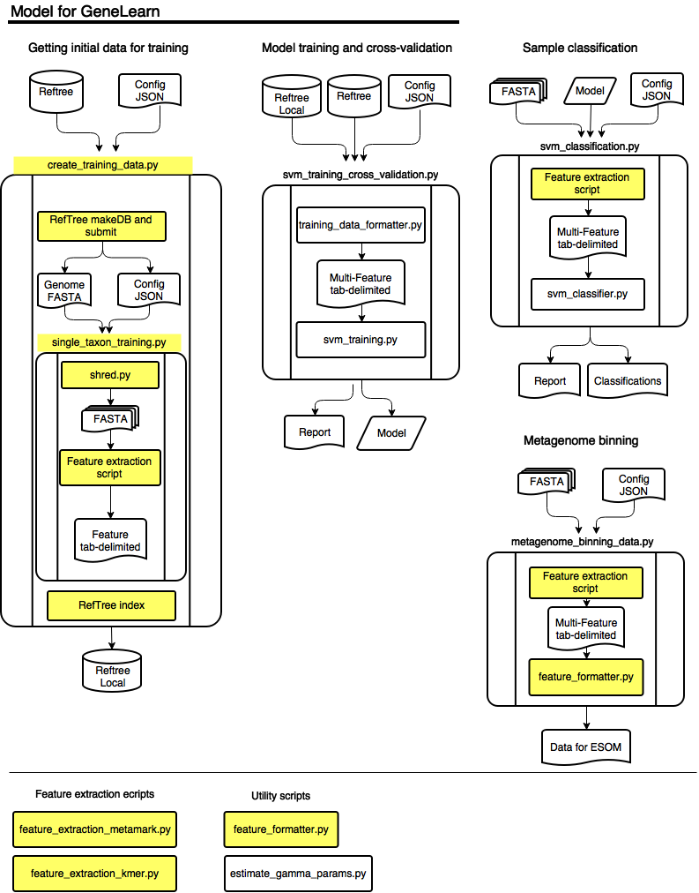

Welcome to GeneLearn’s documentation!¶
Contents:
A program to classify, bin and discover divergent genomic sequences with machine learning using novel feature extraction methods
Features¶
- Classifying metagenomic and metatransciptomic contigs taxonomically
- Creating data files for genome binning using emergent self organizing maps (ESOM)
- Identifying metagenomic contigs and metatransciptomic contigs that come from deeply divergent forms of life
Installation¶
Dependencies:
- GenemarkS version 4.29 (http://exon.gatech.edu/GeneMark/)
- RefTree (https://bitbucket.org/berkeleylab/jgi_reftree)
- Task Farmer (http://jgi.goe.gov)
- Python v2.74 (https://www.python.org/)
- scikit-learn (http://scikit-learn.org/)
- Biopython (http://biopython.org)
- simplejson (https://github.com/simplejson/simplejson)
- NumPy (http://www.numpy.org/)
- SciPy (http://www.scipy.org/)
- Matplotlib (http://matplotlib.org/)
Files¶
Setup¶
- env.sh - source environment variables
- gm_parameters A directory with modified GeneMark Parameter files
- config.json, training.json - config files for running the classifier
Creating Training data¶
crate_training_data.py - a wrapper to have reftree run single_taxon_training.py on each taxon below the selected taxonomic node
single_taxon_training.sh - a shell script that calls single_taxon_training.py
single_taxon_training.py - A wrapper to have run tasks necessary to create training data for a single genome
- shred.py - shreds the genome into smaller pieces of fixed length or sizes conforming to a gamma distribution
- Feature extraction script - see below of a list of features
model training and cross validation via SVM¶
svm_training_cross_validation.py
- training_data_formatter.py - a script to take taxonomic nodes or levels and create a multi feature JSON file for classification
- svm_training.py - A script to take training data, do a parameter search, create a model and cross-validate it
Sample classification¶
svm_classification.py - a wrapper to run SVM classification
- feature extraction scripts - see below
- feature_formatter.py - a utility script to format csv feature data into json data
- svm_classifier.py a script to load a SVM model and classify sequences
Producing data for genome binning¶
metagenome_binning_data.py -a a wrapper for producing genome binning data
- Feature extraction script
- feature formatter
Feature extraction ecripts¶
- feature_extraction_metamark.py - a wrapper to run metamark and extract the genomic feature
- feature_extraction_kmer.py an alternate method of extracting feature information by kmer
Utility scripts¶
- feature_formatter.py - a script to convert between tab delimited and ESOM data formats
- estimate_gamma_parameters.py - a script to estimate gamma parameters from a dataset that will be classified
Diagram of program¶
Support¶
If you are having issues, please let us know. We have a mailing list located at: project@google-groups.com
License¶
The project is licensed under the XXX license.